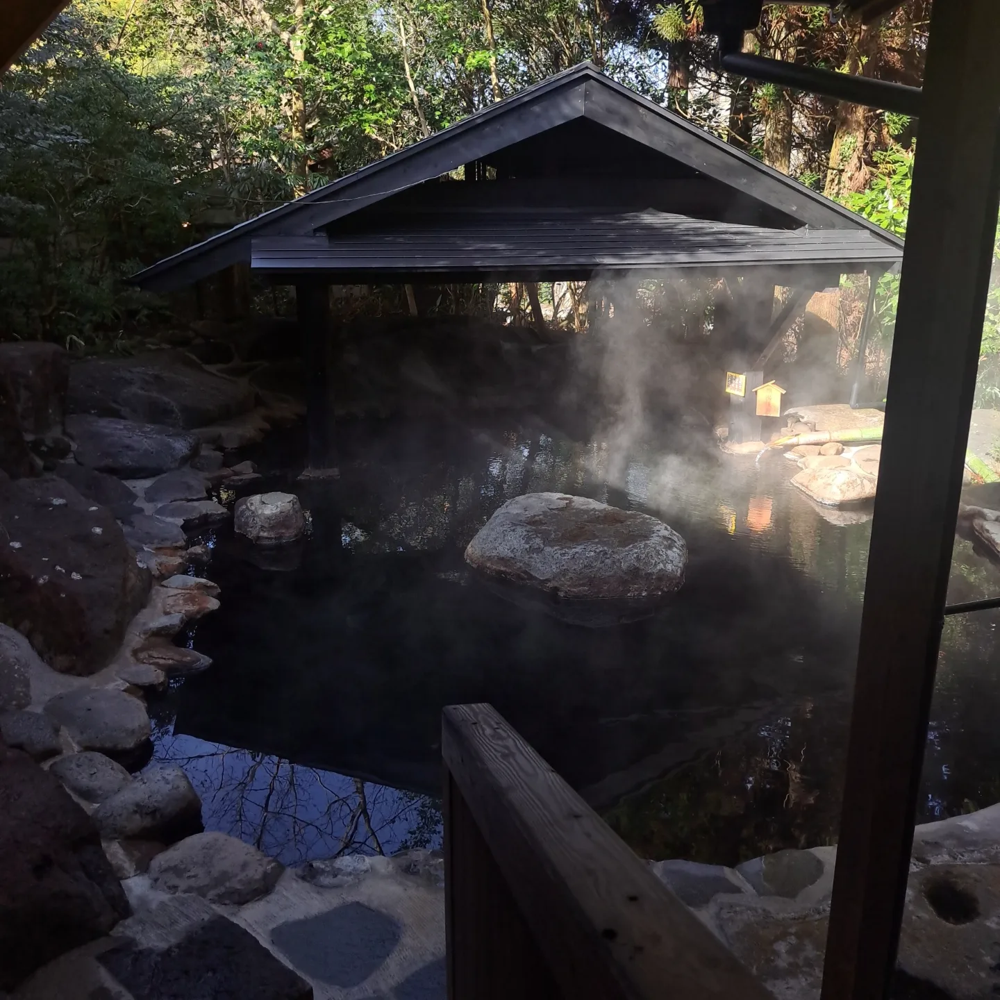
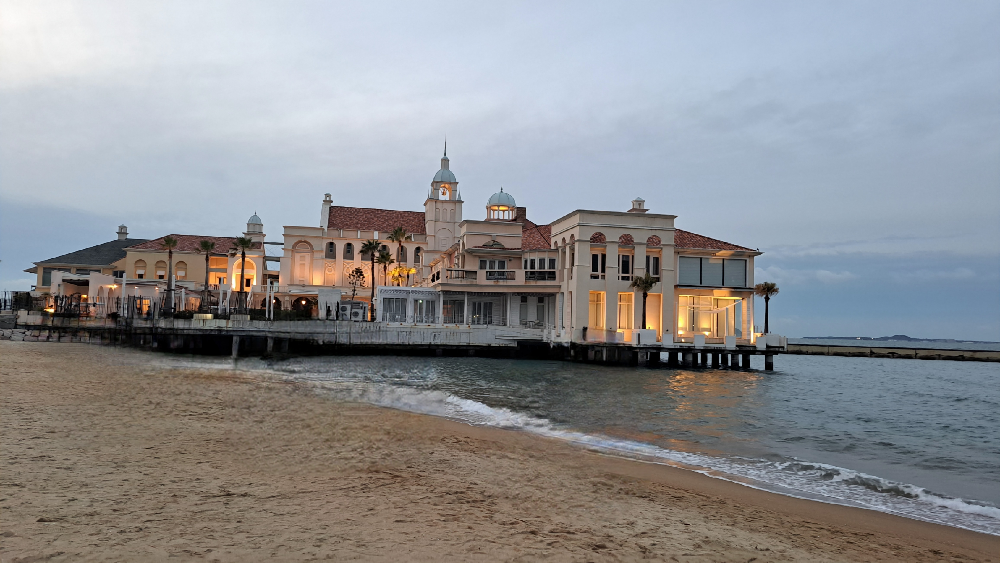
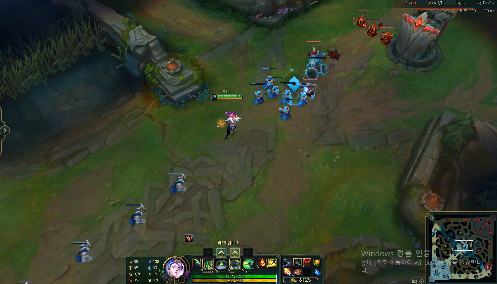

My Information
Age: 23
Gender: man
Residence: Seongnam, Chuncheon
Certificate: Computer literacy level 2, Craftsman Information Processing, Korean History Proficiency Test Level 1
preferred technology: C, Java
Introduce
Hello, I am a computer engineering student at Kangwon National University. Since high school, I went to Sungil Information High School, a specialized high school, to select and study computer-related majors, and I gained skills by obtaining various certificates. I entered Kangwon National University. in 2021 using my major and am studying hard. If you have any more questions about me, please feel free to contact me.
Introducing my favorite hobbies.
I like playing the guitar and covering various songs. I also play the electric guitar and participate in the 'RMPC' band club, the school's central club.
I like to go around many places, explore new places, and come into contact with different cultures. Traveling is more than just about visiting new places, it is an opportunity to broaden your horizons and learn different perspectives. Also, traveling can relieve stress and take new inspiration from daily life.
 I enjoy various genres of games to relieve my stress. Especially, I like RPG and AOS. I often play games with my friends, and it's nice to have many opportunities to increase cooperation and learn teamwork through games. My favorite games are League of Legends, an Aos game, and Lost Ark, an RPG game.
Introducing my military experience. On this page, I would like to introduce the teamwork I learned through military service, the physical and mental strength I gained through various training, and the knowledge I gained while learning military equipment and techniques. These experiences have had a huge impact on my life, and the lessons and growth I have gained from them have made me a better person.
While serving as a driver, I had the opportunity to drive a variety of military vehicles. As a towed howitzer driver, I was mainly responsible for vehicles that could be towed, and in addition to driving, I was able to learn various skills for vehicle maintenance, management, and safe operation.
In addition, I served as a PX soldier and chaplain as a second specialty. I was able to learn responsibility and service spirit through tasks such as product management, inventory tracking, sales and customer service, church religious events, and facility management. Additionally, I was able to improve my interpersonal skills through communicating with a variety of people.
Training as a towed howitzer operator was very intense and systematic. we were mainly trained to tow cannons and learn artillery tactics. Through this, I was able to drive and gain a deep understanding of the importance of vehicle operation in complex military operations, additionally acquire skills as an artilleryman, and learn coping skills in tactical situations. Towed artillery training requires teamwork and precision, which are directly related to survival on the battlefield.
I learned a lot while serving in the military. Military life opened up a new world to me, and I experienced many challenges and growth in the process. Living and training with colleagues from different backgrounds taught me how to cooperate and rely on each other. Additionally, there were many opportunities to demonstrate leadership while carrying out various military operations. These experiences developed my patience and perseverance, improved my problem-solving and coping skills, and became a valuable foundation for my life.